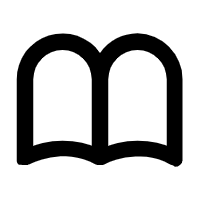

致广大而尽精微，悟一道而扬万里
你好 我是叶广扬

WELCOME MY WORLD
首先从一般意义上来说，计算机专业是一门硬件与软件相结合、面向系统、侧重应用的宽口径专业。也是一门研究信息是如何表示和存储、 如何发送和接收、如何处理分析的一门学科，它几乎涉及了与计算机相关的所有领域，可以说哪里有计算机哪里就会有计算机专业。
计算机专业包括几大不同的专业，计算机科学与技术，软件工程，网络工程，信息安全，物联网工程， 保密技术，数字媒体技术等，不同的专业之间尽管各有各专攻的地方，但知识之间没有明显的壁垒，专精于一门专业的学生也需要了 解其他计算机专业知识，这样有利于在未来的工作岗位中更好地与其他部门沟通协同，对计算机各专业都有所了解也有助于未来创业 或从事相关的计算机研究工作。
在计算机学科中我们需要学习地知识比较广泛。我们首先需要学习高等数学，离散数学， 线性代数为主的基础理论知识。计算机专业作为了一门偏应用的工科学科，对数学的应用是非常广泛，从计算机产生开始， 全球计算机的大牛无一不是对数学有着深刻认识和理解，数学毋庸置疑是计算机学科的基石。所谓“万丈高楼平地起”，唯有数学学好 才能为计算机专业的学习打下坚实的基础。
再者我们需要学习计算机相关的专业课程，主要包括六大板块：编程语言，数据结构与算法，计算机网络，操作系统，数据库/SQL和设计模式， 根据所选择的专业不同，所专精的板块也不同，但无论是哪一门专业，编程语言都是必不可少的，编程语言是计算机专业最关键的工具，任何与计 算机有关的项目都离不开编程语言，而学习编程语言的过程也是计算机入门的过程，因而对于初学者来说，学好编程语言是踏向计算机殿堂的 第一步，需要认真对待。而另外5各板块，每个计算机专业的学生也需要去学习，并对自己所选专业有关的内容要深入探究，这样才可融会贯通， 真正学会运用计算机。
我第一次听到学业规划这一词，是我刚踏入高中的那时候，现在想来那时的我还很懵懂很幼稚，以为学业规划只是一个目标一个方向，而我当时立下的目标就是考入好大学学学习计算机。如今这个目标算是达到了，我将在西安交大延续自己的计算机梦想，而我的学业规划也在这半年的大学学习当中慢慢形成了。
我的学业规划将分为四个阶段，分别对应大学的四年。第一年我的主要任务是适应大学生活，掌握大学的学习方法，养成自己的学习习惯，踏实自己基础学科为之后的专业学习做准备。第一年概括起来就是一个字“学”，学基础理论知识，高数，线代，大物，大化，为大学学习打下坚实的基础；学习通识知识，选修课，核心课，思修，国防教育等，拓展自己的知识面，培养自己的法律意识，激发自己的爱国热情；学习专业知识，各类编程语言：JAVA,C++,C,Python,HTML5,CSS,JS还有数据结构与算法，提前接触专业知识，养成主动学习的习惯；学习学长学姐经验，听各类讲座会议，了解专业相关的最新发展和成果，把握机会，为未来提前做打算。
第二年，我的主要目标是学习专业知识，参与各类竞赛活动，在实战中增强自己的硬实力。在这一阶段，我决定广泛涉猎大量的计算机科学与技术相关的书籍，去各类开源网站实践各种项目，去磨练自己的编程能力和训练自己专业技能。同时我将会参加各类计算机相关竞赛，包括数模竞赛，ACM程序设计竞赛等，去检验自己的能力，在比赛中积累实战经验，依靠竞争激发自己学习的斗志。第二阶段概括来说就是与计算机打交道，去实践一切能提升自己专业技能的方法，练就过硬的本领。
第三年，我的主要任务是保研和参与实践活动并且继续进行第二阶段的任务。在这一年，我会比较忙碌，需要在学业上投入较多的时间，去争取保研的资格，另一方面我需要去“实战“，参与计算机公司的实习或加入计算机有关的科研小组，将自己的学习成果真正用于实际应用，在应用中学习，在通过学习进一步提升自己的能力。
第四年，如果保研成功的话，我会将大部分精力投入自己的感兴趣的领域。在这一阶段，我会继续进行科研，尝试外包的项目开发，而更多的精力我会去把大部分精力投入我未来专精的领域，这一方面是为研究生及之后的学习做准备，一方面也是决定我未来职业方向的重要一步。我将会去尽可能了解这个领域的一切资料，包括所要学习的知识，相关的科研项目，有关的国际期刊和学术资源，从事此领域的研究者的研究方向，该领域的就业环境，该领域国际上的最新进展和成果等等。我将在大学的最后一年，探索我未来研究的方向，绘制我未来的蓝图。
如上就是我大学四年的学业规划，但光说不练假本事，这每一阶段的任务都充满了重重困难与挑战，但我相信凭借自己的努力一定可以克服难关，实现自己的理想。
致广大而尽精微，悟一道而扬万里
你好 我是叶广扬